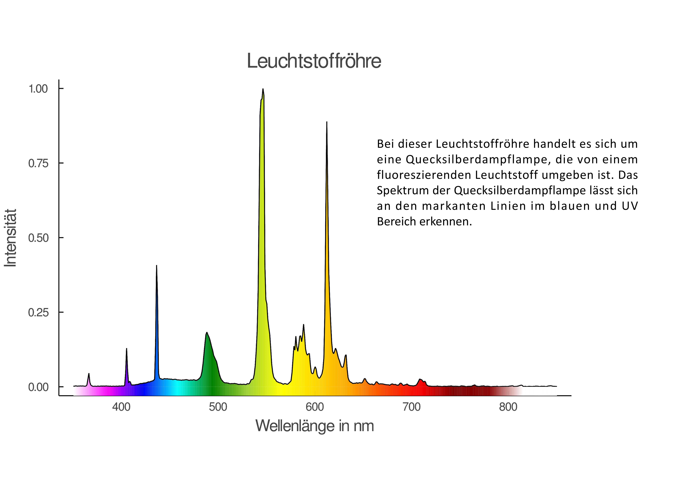
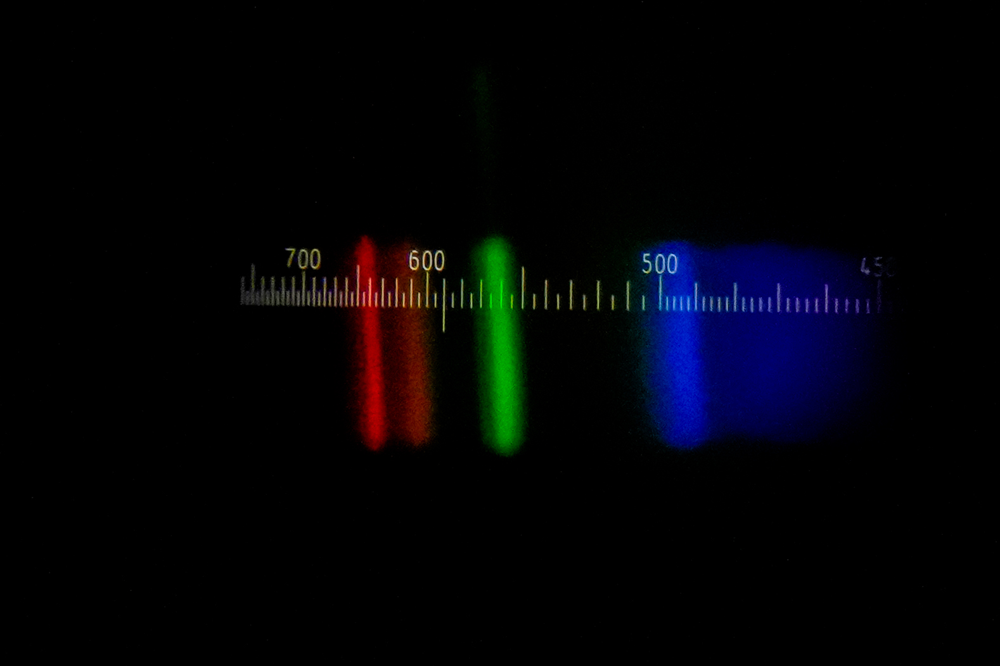

CCD-Spektrometer



Das weiße, helle Licht dieser ausgedehnten Lampen wird oft in großen Räumen (z.B. Schulen, Büros) genutzt, da es eine gleichmäßige Ausleuchtung und eine förderliche Arbeitsatmosphäre ermöglicht.